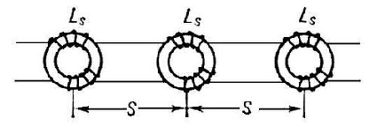

Тема №1. Полевые кабельные линии связи
Занятие №3. Общие сведения о полевых кабельных линиях связи.
Учебные вопросы:
Литература:
- Инструкция по развёртыванию и эксплуатации полевых кабельных линий связи для соединений, воинских частей и подразделений связи Вооруженных Сил : приказ начальника Генерального штаба ВС – Первого заместителя Министра обороны Республики Беларусь №501 от 30 сентября 2003 г. – Минск : Министерство Обороны Республики Беларусь, 2003.
- Учебное пособие «Оконечная и коммутационная аппаратура проводных средств связи». – Мн.: БГУИР, 2010.
- Многоканальные системы передачи, Ч.1. Теоретические основы построения МСП. – Мн.: БГУИР, 2010.
1. Цель и задачи дисциплины, ее предмет, структура и план изучения.
Цель преподавания дисциплины. Дисциплина «Военные системы передачи кабельных линий связи» относится к группе дисциплин специализации и является базовой в подготовке офицеров войск связи с высшим военно-инженерным образованием для специализации «Специальные системы телекоммуникаций» и по их должностному предназначению.
Целью изучения дисциплины является получение курсантами глубоких знаний оборудования полевых кабельных линий и аппаратуры каналообразования аналоговых и цифровых систем, применяемых в системе связи Министерства обороны Республики Беларусь в объеме, необходимом для инженера по телекоммуникациям.
Задачи изучения дисциплины. Занятия, проводимые в ходе изучения дисциплины, должны быть направлены на решение следующих задач:
- закрепление теоретических знаний и совершенствование практических навыков, полученных курсантами при изучении общепрофессиональных, специальных дисциплин и дисциплин специализаций;
- совершенствование курсантами навыков работы с учебной литературой и технической документацией при отработке вопросов эксплуатации систем передачи полевых кабельных линий связи;
- развитие у курсантов логического мышления, необходимого для анализа функциональных связей между отдельными устройствами, блоками и приборами средств и систем передачи полевых кабельных линий связи, с целью овладения методикой оценки их работоспособности в целом;
- выработка у курсантов практических навыков в организации эксплуатации базовых образцов аппаратуры каналообразования на полевых кабельных линиях связи в объеме, необходимом для применения их по назначению и технического обеспечения связи;
- подготовка курсантов 4го курса к экзамену по дисциплине;
- воспитание у курсантов любви к Родине – Республике Беларусь, к военной профессии, ответственности за получение практических навыков и умений по специальности.
В результате изучения дисциплины курсанты должны знать:
- требования безопасности личного состава при работе на технике связи;
- условия выполнения учебных задач и нормативов на средствах связи;
- легкие полевые кабели связи, полевые кабели дальней связи, внутриузловые кабели, их технические характеристики; порядок и правила прокладки и снятия полевых кабелей связи, ремонт полевых кабелей связи;
- назначение, состав, тактико-технические характеристики, функциональные схемы и элементы принципиальных электрических схем телефонных аппаратов ТА-57, П-171Д;
- назначение, состав, тактико-технические характеристики, функциональные схемы коммутаторов малой и средней емкости П-193М, П-193М2, П-194М1, П-198М1, телеграфных аппаратов ЛТА-8, РТА-7;
- технические данные АТС ФМ, назначение функциональных блоков и принцип их работы, программное обеспечение АТС ФМ.
- назначение, состав, тактико-технические характеристики, структурные и функциональные схемы аппаратуры каналообразования, П-302-О, П-301-О, П-330-1, П-330-3, П-330-24;
- назначение, состав, тактико-технические характеристики, структурные схемы аппаратуры тонального телеграфирования П-318М6, П-327-12;
- назначение, состав, тактико-технические характеристики принцип работы аппаратуры тонального телеграфирования П-327-ПУ, П-327ТПУ;
- назначение, состав, тактико-технические данные, структурные схемы аппаратных П-257-12К, П-258-24К, П-246М;
- назначение, структуру и состав оборудования полевой кабельной линии ПКЛ-296/302 и ПКЛ-296/330-24;
- назначение, состав, технические данные, структурные схемы основного оборудования цифровой системы передачи П-331 «Импульс»;
- назначение, состав, технические данные, устройство, принцип работы, структурные схемы основного оборудования цифровой системы передачи «Megatrans-3M»;
- назначение, состав, устройство, принцип работы, структурные схемы основного оборудования сетей доступа PDH;
- порядок подготовки к работе, включения, проверки работоспособности, настройки, регулировки, правила эксплуатации и технического обслуживания изучаемых образцов аппаратуры;
- основные электрические характеристики каналов тональной частоты, широкополосных каналов, трактов изучаемой аппаратуры, порядок измерения и оценки;
- порядок настройки ПКЛ, образованных с использованием изучаемой аппаратуры связи;
- правила ведения связи, обеспечения ее безопасности; основные требования по ведению технической и эксплуатационной документации;
- содержание учебных нормативов и задач на изучаемой технике и ПКЛ;
уметь:
- проводить мероприятия по обеспечению требований безопасности при эксплуатации аппаратуры и оборудования ПКЛ;
- проводить включение, проверку работоспособности и настройку изучаемой аппаратуры на себя и в линию;
- устанавливать связь, производить настройку каналов, групповых и линейных трактов;
- проводить измерение и оценку электрических параметры каналов и линий связи с помощью штатных измерительных приборов;
- выполнять нормативы и учебные задачи на средствах связи.
- вести техническую и эксплуатационную документацию.
иметь представление о:
- перспективах совершенствования и развития каналообразующей техники связи гражданского и военного назначения
1. Виды полевых кабельных линий связи.
В состав проводных средств связи входят полевые кабели связи, которые предназначены для быстрого и многократного строительства полевых кабельных линий. Полевые кабельные линии должны обеспечить устойчивую связь на необходимые расстояния независимо от атмосферно-климатических условий.
Кабелем связи называется конструкция, состоящая из нескольких изолированных и скрученных определенным образом токопроводящих жил или волоконных световодов, заключенных в общую защитную оболочку.
Основные элементы конструкции кабеля:
- Токопроводящие жилы (проводники) - элемент кабеля, предназначенный для прохождения электрического тока. Проводники кабелей связи изготовляют из меди, стали, алюминия. В существующих кабелях основным материалом жил является медь.
В зависимости от конструкции и расположения металлических ТПЖ различают симметричные и коаксиальные цепи (пары). - Коаксиальная цепь образована различными по конструкции и электрическим характеристикам ТПЖ, изолированными друг от друга, но имеющими совпадающие геометрическую и электрическую оси (сплошная внутренняя ТПЖ расположена внутри полой ТПЖ).
- Симметричная цепь состоит из двух одинаковых по конструкции изолированных ТПЖ, имеющих одинаковые электрические характеристики.
- Кабели связи, имеющие в своем составе волоконные световоды называют оптическими кабелями.
- Волоконный световод - направляющий канал для передачи оптического излучения, состоящий из сердцевины, окруженной отражающей оболочкой. Для предотвращения механических повреждений волоконный световод покрыт синтетическим слоем.
- Элементарные группы - скрученные определенным образом изолированные ТПЖ симметричных кабелей. Для уменьшения взаимных влияний между цепями и уменьшения влияния внешних помех изолированные жилы симметричных кабелей скручиваются в группы (пары, четверки), образующие соответственно одну или две рабочие цени. Кроме того, скрутка облегчает взаимное перемещение групп кабеля при его изгибах и распознание жил и пар при монтаже кабеля.
- Кабельный сердечник - систематизированные в определенном порядке элементарные группы (как правило элементарные группы располагаются концентрическими слоями (повивами) вокруг центральной оси кабеля).
- Поясная изоляция - несколько слоев полиэтиленовой ленты, предназначенная для механической стабилизации кабельного сердечника и его защиты от повреждений при наложении защитной оболочки.
- Защитный шланг и герметическая оболочка предохраняет кабельный сердечник от попадания влаги и возможных химических повреждений. Экран позволяет стабилизировать электрические параметры цепей, а также уменьшить влияние между цепями.
- Грузоносные элементы предназначены для обеспечения необходимой прочности кабеля на разрыв, а также для защиты кабельного сердечника от возможных повреждений при прохождении кабеля через тракт кабелеукладчика.
По полевым кабельным линиям связи могут быть организованы следующие виды связи: телеграфная, телефонная, фототелеграфная посредством применения соответствующих видов аппаратуры, установленных в различных аппаратных узлов связи.
Основные требования, предъявляемые к полевым кабелям связи
- малый вес и габариты при условии обеспечения требуемого числа каналов связи на необходимые дальности;
- достаточная механическая прочность и гибкость, обеспечивающая возможность многократного использования кабеля и применения
- средств автоматизации при его прокладке и снятии;
- устойчивость в работе при различных условиях прокладки и эксплуатации;
- экономичность и возможно большая стабильность электрических и механических характеристик при длительном хранении.
Выполнение основных требований к полевым кабельным линиям связи достигается:
- использованием для прокладки исправного и пригодного для эксплуатации кабеля;
- технически правильным выполнением линейных работ;
- тщательным укрытием и маскировкой линий;
- надежным эксплуатационным обслуживанием линий;
- высоким техническим качеством материалов, используемых при изготовлении полевых кабелей связи (высокая проводимость токонесущих жил, высокие качества электроизоляции, механическая прочность материалов, совершенство конструкции кабелей).
Классификация полевых кабелей связи.
- легкие полевые кабели, используемые для организации связи на сравнительно небольшие расстояния (П-268, П-274М);
- полевые кабели дальней связи, используемые для обеспечения связи на значительные расстояния (П-296, П-270);
- внутриузловые полевые кабели, используемые для устройства вводов полевых линий в узлы связи и контрольно-испытательные пункты ( усилительные пункты) и соединение их элементов между собой, а также для устройства распределительной сети внутренней связи на пунктах управления: (ПТРК - полевой телефонный распределительный кабель; ТТВК телефонно-телеграфный вводный кабель; ВСЭК - вводно-соединительный экранированный)
2. Устройство полевых кабелей связи
Лёгкие полевые кабели
Лёгкие полевые кабели П-274М (рис-1) и П-268 (рис-2) предназначены для организации связи на сравнительно небольшие расстояния (не более 20-30 км), а также для прокладки абонентских линий внутри ПУ. В этом случае длина абонентских линий не должна превышать для П-274М 10 км (МБ) и 8 км (ЦБ).
Данные кабели могут быть использованы для дистанционного управления радиостанцией на расстоянии до 8 км, кроме того в эти кабели можно включать аппаратуру ВЧ Азур-1, П-309. В качестве изоляции используется полиэтилен низкого давления с добавлением сажи, которая окрашивает кабель в черный цвет, что приводит к повышению стойкости относительно солнечной активности.
Технические характеристики кабеля П-274М, П-268
| № п.п. | Характеристика | П-274М | П-268 |
|---|---|---|---|
| 1 | Число токопроводящих жил | 2 | 2 |
| 2 | Число и диаметр проволок в токопроводящей жиле: медных стальных |
4 х 0,3 мм 3 х 0,3 мм |
12 х 0,25 мм 7 х 0,25 мм |
| 3 | Вес 1 км кабеля | 15 кг | 35 кг |
| 4 | Строительная длина | 500 м | 1000 или 1500 м |
| 5 | Вес катушки (барабана) с кабелем | 11-13 кг | 48 или 66 кг |
| 6 | Прочность на разрыв одной изолированной жилы | 40 кг | 65 кг |
| 7 | Электрическое сопротивление изоляции в воде | 1000 мОм/км | 1000 мОм/км |
| 8 | Электрическое сопротивление постоянному току | 125 Ом/км | 66 Ом/км |
| 9 | Рабочий диапазон частот | 15 кгц | 30 кгц |
| 10 | Дальность связи (км): НЧ связь Аппаратура «Азур – 1» Аппаратура «Азур – 6» |
20-30 15 - |
40-45 30 14 |
Конструктивные особенности
1. В проводе П-274МЛ и ОП-274МЛ - стальная оцинкованная проволока заменена на стальную латунированную, с более высокими прочностными характеристиками, что дает увеличение разрывного усилия на 20-25%.(смотри приложение №1)

Количество жил и сечение 2 * 0,5 мм. Токопроводящая жила скручивается из 3-х стальных проволок диаметром 0,3 мм и 4-х медных проволок диаметром 0,3 мм. В центре распологается стальная проволока, а в наружном повиве медные и стальные проволоки по схеме: 2-медные+1 стальная+2 медные+1 стальная. Изолированные жилы скручивают в пару с шагом 80-100 мм. Толщина изоляции 0,5 мм. Максимальный диаметр изолированной жилы 2,3 мм.

Рис.1. Кабель П-274

Система скрутки и расположения проволок в токопроводящей жиле проводов следующие: в центральных повивах стальные проволоки, медные проволоки в наружном повиве. Проволоки в смежных повивах скручены в противоположных направлениях. Шаг скрутки токопроводящей жилы неболее 20 диаметров жилы. Направление верхнего повива левое. Поверх токопроводящей жилы наложена изоляция из полиэтилена. Изолированные жилы скручены в пару с шагом скрутки 100-120 мм. Направление скрутки пары - правое.

Рис.2. Кабель П-268
Полевые кабели дальней связи П-296, П-270.
Полевой кабель дальней связи П-296 (П-296М)(Рис-3) предназначен для развертывания:
- полевых кабельных линий с использованием каналообразующей аппаратуры с частотным разделением каналов емкостью 6, 12, 24 и 60 каналов тональной частоты уплотняемых в спектре частот до 2048 кГц( полоса пропускания П- 296 ориентирована на 60-ти канальные системы уплотнения , аппаратура комплекса «Топаз» имеет линейный спектр до 252 кГц, а комплекса «Азур» - до 552 кГц);
- полевых кабельных линий с использованием каналообразующей аппаратуры с временным разделением каналов со скоростями 480 и 2048 кбит/с.
Гибкая токопроводящая жила (ТПЖ) скручена из 7 медных проволок, каждая диаметром 0.35 мм. Система скрутки 1+6 (одна медная проволока в центре, шесть в повиве). Такая конструкция ТПЖ называется "литца", что обеспечивает ей большую гибкость и механическую прочность при многократных изгибах. ТПЖ изолирована полиэтиленом. Изолированные ТПЖ скручены в четверку вокруг полиэтиленового заполнителя. Наличие заполнителя позволяет в процессе производства кабеля строго выдержать необходимые расстояния между изолированными ТПЖ при скрутке их в четверку. Противоположные ТПЖ в четверке образуют рабочую пару (всего 2-е рабочие пары). Цвет изоляции ТПЖ одной пары в четверке отличается от цвета изоляции жил другой пары. Скрученные в четверку изолированные ТПЖ отпрессованы слоем полиэтилена (для заполнения до круглой формы кабельного сердечника). Поверх кабельного сердечника наложен экран в виде повива из 90 медных проволок, каждая диаметром 0.23 мм. В полумуфтах кабеля экран подключается к центральному штыревому контакту, что при соединении строительных длин обеспечивает электрическую непрерывность экрана. Поверх экрана наложены грузонесущий элемент в виде каркасной двухповивной обмотки из 36 стальных луженых или оцинкованных проволок диаметром 0.25 мм каждая (направления повивов обмотки взаимно противоположны) и защитный шланг из поливинилхлоридного пластиката (грузонесущий элемент впрессован в защитный шланг). Строительные длины кабеля на концах армируются соединительными полумуфтами, позволяющими быстро и надежно соединять строительные длины в процессе прокладки кабеля.
| № п.п. | Характеристика кабеля П-296 | Значение |
|---|---|---|
| 1 | Разрывная прочность | 250кг |
| 2 | Вес 1 км кабеля | 184кг |
| 3 | Вес строительной длины с барабаном | 118кг |
| 4 | Строительная длина | 500м |
| 5 | Число жил | 4 |
| 6 | Число жил и диаметр проволок жилы, мм | 7 х 0.35 |
| 7 | Диаметр изолированной жилы, мм | 2.35 |
| 8 | Диаметр проволок, мм медного экрана стального повива |
90х0,23 36х0,30 |
| 9 | Диаметр кабеля, мм | 12.2 |
| 10 | Сопротивление постоянному току I км кабеля | 55,5 Ом/км |
| 11 | R изоляции | 5000 мОм/км |


Кабель поставляется комплектом. Кроме строительных длин кабеля в состав комплекта входит комплектующие изделия:
два оконечных кабеля – для подключения линии кабеля к аппаратуре связи, две короткомерных вставки – для возможности сочленения строительных длин кабеля при их замене в случае выхода из строя, один кабель подключения – для подключения линии на КТП; два контрольных шнура – для подключения контрольно – измерительных приборов; две муфты скрещивания – для повышения параметров влияния : двух колодок короткозамкнутых с заземлителем – для возможности проведения контрольных измерений линий; одна муфта контрольная – для организации контрольно – телефонного поста на линии связи.
Строительные длины кабеля намотаны на металлические барабаны и закрыты ограждениями. Комплектующие изделия уложены в пластмассовый мешок и упакованы в ящик, на крышке которого нанесено "Комплект кабеля П-296 "№" и две последние цифры года изготовления.
На каждой полумуфте армированного кабеля, оконечного кабеля, кабеля подключения и вставки короткомерной нанесена маркировка: две последние цифры года изготовления, шифр предприятия-изготовителя на конусе и номер комплекта и номер длины в комплекте - на металлической бирке, вставленной в карман конуса.
Полумуфты строительной длины кабеля, имеют белые, несмываемые метки в виде чередующейся через одно поле окрашенной поверхности между ребрами замка.
Маркировка контрольной муфты и муфты скрещивания содержит последние цифры года изготовления и порядковый номер. На конусах кон-трольного шнура и колодки короткозамкнутой указаны две последние цифры года изготовления.
На щеке барабана указаны две последние цифры года изготовления.
Масса одного барабана с кабелем и ограждением - не более 118 (70) кг.
Разрывное усилие кабеля, включая места заделки его в соединительные полумуфты - не менее 2450 Н (250 кгс).
Строительная длина кабеля на барабане 500+5 м. В каждом комплекте может быть один барабан с двумя намотанными кабелями длиной по 250+2 м.
Марки кабелей и комплектующих изделий:
- П-296М - Кабель с изоляцией и оболочкой из полиэтилена, армированный для эксплуатации при температуре от минус 50 до 550С.
- П-296 - То же, при температуре от минус 40 до 55 0С.
Комплектующие изделия:
полумуфта соединительная
- Кабель оконечный ОК-296 (Рис.4а). Длина 5 м. на одном конце - соединительная муфта, на другом –перчатка. Для подключения к аппаратуре и перехода на другие типы линий
- Кабель подключения КТП-296. Длина 5,6м. на концах соединительные полумуфты. Для подключения переговорного устройства к контрольной муфте
- Шнур контрольный КШ-296 (Рис.4а). Длина 1,6м. на одном конце соединительная полумуфта без замка, на другом – перчатка. Для подключения измерительных приборов к цепям и экранам кабеля.
- Вставка короткомерная КВ-296. Длина 11,6м. на концах – соединительные полумуфты. Для вставки при необходимости в линию, когда одна строительная длина заменяется другой.
- Колодка короткозамкнутая КЗ-296. Кабель длиной 1,5м. с соединительной полумуфтой на одном конце и металлическим стержнем на другом, стержень соединен с жилами и экраном кабеля. Для измерения кабеля и снятия электрического заряда, вызванного дистанционным питанием НУП
- Муфта скрещивания СМ-296 (Рис.4б). В муфте одна цепь скрещивания, другая соединена напрямую. Используется при симметрировании кабельной линии.
- Муфта контрольная КМ . Включается между строительными длинами кабеля. Обеспечивает провидение измерений и подключение переговорного устройства в одну и другую сторону линии.
Рис. 4
Конструкция, размеры и расчетная масса кабелей:
Марка кабеля: П-296М
- число и номинальный диаметр медных проволок жилы, мм: 7х0,35;
- число четверок: 1;
- наружный диаметр кабеля, мм, не более: 11,4;
- расчетная масса 1 км неармированного кабеля, кг: 179,5;
- строительная длина армированного кабеля с учетом длины соединительных полумуфт, м: 500+-5;
Марка кабеля: П-296
- число и номинальный диаметр медных проволок жилы, мм: 7х0,35;
- число четверок: 1;
- наружный диаметр кабеля, мм, не более: 11,4;
- расчетная масса 1 км неармированного кабеля, кг: 182;
- строительная длина армированного кабеля с учетом длины соединительных полумуфт, м: 500+-5;
Основные электрические параметры кабелей:
- электрическое сопротивление жил пары на длине 1 км, Ом 53+-2,5;
- электрическое сопротивление экрана на длине 1 км, Ом, не более 7,0;
- омическая асимметрия пары на длине 500 м, Ом, не более 0,2;
- электрическое сопротивление изоляции жилы на длине 1 км, Мом, не менее 5000;
- испытательное напряжение изоляции жилы (контакта) относительно других, соединенных с экраном, в течение не менее 2 мин., В 1500;
- рабочая емкость пары на длине 1 км, нф 44,6+-2,2;
Кабель П-270
Полевой кабель дальней связи П-270 (Рис.6) предназначен для развертывания кабельных линий с использованием каналообразующей аппаратуры с ЧРК емкостью до 12 каналов тональной частоты.
П-270 пупинизированный кабель, катушки индуктивности (Ls=1,3 мГн) вмонтированы в соединительные полумуфты, которыми оканчиваются строительные длины. Катушка состоит из тора, изготовленного из карбонильного железа, размером 28Х178мм и двух полуобмоток, выполненных проводом ЛЭШО 35Х0,07.
Каждая катушка заключена в пластмассовый изоляционный корпус, на одну из сторон которого выведены от полуобмоток перья. Номинальная величина индуктивности катушки 0,8 мГн. Пупинизация ограничивает возможность использования цепей кабеля П-270 до 60 кГц. Шаг пупинизации соответствует строительной длине кабеля.
Пупинизация - метод уменьшения затухания кабеля на низких частотах (например, в полосе канала ТЧ). Назван так по имени его изобретателя. В линию вводят катушки индуктивности на определенном расстоянии друг от друга (обычно около 1-2 км). К сожалению, за уменьшение затухания на низких частотах (в полосе канала ТЧ) приходится платить существенным увеличением затухания на более высоких частотах, которые используют модемы для физических линий. Это приводит к невозможности использования модемов для физических линий на пупинизированных кабелях. В зависимости от типа пупинизации, на таких линиях могут плохо работать также и современные модемы для каналов ТЧ. Схема пупинизированной кабельной линии(Рис-5): Ls — пупининовская катушка S — шаг пупинизации..
Рис.5. Схема пупинизированной кабельной лини.
Достоинства: увеличивается дальность связи на одном участке без использования НУП. Недостатки: уменьшается диапазон используемых частот; невозможен прием ДП для НУП.
Конструкция:
Кабель имеет 4ре токопроводящих жилы, каждая из которых скручена из 7-ми медных проводов диаметром 0,49 мм. Изолированные жилы свиты звёздной скруткой с шагом 80 мм. Скрученные жилы опрессованы слоем полиэтилена (заполнение до круглой формы). Поверх заполнения положены электростатический экран из алюминиевой ленты толщиной 0,15 мм, каркасная оплётка из 24-х стальных лужённых (оцинкованных) проволок диаметром 0,25 мм каждая, и внешний защитный шланг из поливинилхлоридного пластика 301-ой рецептуры черного цвета, морозостойкого при температурах до -40 C.

Рис.6. Кабель П-270
| Технические характеристики кабеля П-270. | ||
|---|---|---|
| № п.п. | Характеристики | Значение |
| 1 | Строительная длина | 250 м |
| 2 | Конструкция жил | 7х0,49 |
| 3 | Количество жил | 4 |
| 4 | Материал изоляции жил | полиэтилен |
| 5 | Скрутка жил | звездная |
| 6 | Конструкция и материал экрана | алюминиевая лента диам. 0,15мм |
| 7 | Материал защитного шланга | поливинилхлорид |
| 8 | Диаметр кабеля | 14 мм |
| 9 | Масса кг/км | 240 |
| 10 | Выходное сопротивление кабеля | 600 ом |
| 11 | Сопротивление изоляции | 1250 мом/км |
Характеристики вводно-соединительных и распределительных кабелей.
К вводно-соединительным и распределительным полевым кабелям (внутриузловым полевым кабелям) относятся: вводно-соединительный экранированный кабель ВСЭК-5х2, полевые телефонные распределительные кабели ПТРК-20х2, ПТРК-10х2, ПТРК-5х2, полевые распределительные кабели ПРК-20х2, ПРК-10х2 и ПРК-5х2, кабель П-269 и телефонно-телеграфный вводный кабель ТТВК-5х2.
Кабель ПТРК
Полевой телефонный распределительный кабель предназначен для замены кабеля ТТВК. Могут использоваться в аппаратуре с частотой до 16кГц.
Выпускается трех видов:
- ПТРК- 5х2
- ПТРК - 10х2
- ПТРК - 20х2
Токопроводящая жила состоит из 7-ми медных проволок диаметром 0,26 мм. Жилы изолированы полиэтиленом толщиной 0,45 мм. Пары скручены у ПТРК 5х2 парами, у остальных кабелей звёздной скруткой и обмотаны влагостойким синтетическим материалом. У ПТРК 5х2 в центре имеется стальной трос из 7-ми проволок диаметром 0,25 мм. Поверх обмотки у ПТРК 10х2 и ПТРК 20х2 положена оплётка из 16-ти стальных проволок диаметром 0,25 мм. Защитный шланг выполнен из половинилхлоридного пластика. Строительная длина кабеля наматывается на катушку(Рис.7а) и оканчивается муфтой (Рис.7б,г). Для разветвления кабеля используется разветвительная муфтр РМ-10(Рис.7в)


| Технические характеристики кабеля ПТРК. | |||
|---|---|---|---|
| Характеристики | Значение | ||
| Наименование кабеля | ПТРК 5Х2 | ПТРК 10х2 | ПТРК 20х2 |
| Строительная длина | 50, 100, 150 м | 50, 100 м | 50 м |
| Количество жил | 7х0,23 | 7х0,23 | 7х0,23 |
| Диаметр кабеля | 13,0 мм | 16,0 мм | 21,0 мм |
| Прочность на разрыв | 120 кг | 120 кг | 120 кг |
| Сопротивление при Т = 20°С: жилы (постоянный ток) | более 135 ом/км | более 135 ом/км | более 135 ом/км |
| Сопротивление изоляции | 5000 мом/км | 5000 мом/км | 5000 мом/км |

Схема распайки полумуфты кабеля ПТРК 5х2

Схема распайки полумуфты кабеля ПТРК 10х2

Схема распайки полумуфты кабеля ПТРК 20х2

Кабель ТТВК.
Телефонно-телеграфный вводный кабель (ТТВК) предназначен для вводов неуплотнённых цепей и для устройства распределительной сети внутренней телефонный связи.
Выпускается двух видов:
- ТТВК - 5х2 (Рис.8)
- ТТВК - 10х2
Конструкция:
Токопроводящая жила состоит из 7-ми медных проволок диаметром 0,25±0,005 мм, свитых в жилу с шагом скрутки около 15 мм. Жилы изолированы резиной РТИ-1 толщиной 0,7-0,8 мм и скручены в пары с шагом 65-75 мм. Пары имеют отличительную окраску изоляции. Пары скручены вокруг витого троса из стальных проволок диаметром 0,3 мм спрессованных резиной и покрыта хлопчатобумажной оплеткой. Скрученные пары покрыты прорезиненной миткалевой лентой и затем опрессованны оболочкой из резины РШ-1 толщиной 1,5 мм
| Технические характеристики кабеля ТТВК 5х2. | |
|---|---|
| Характеристики | Значение |
| Строительная длина | 50, 100, 150 м |
| Количество жил | 7х0,25 |
| Диаметр кабеля | 13,0 мм |
| Прочность на разрыв | 120 кг |
| Сопротивление при Т = 20°С: жилы (постоянный ток) | более 106 ом/км |
| Сопротивление изоляции | 1000 мом/км |


Рис.8. Кабель ТТВК 5х2
Кабель ВСЭК
ВСЭК - вводно-соединительный кабель с экранированными парами. Кабель ВСЭК выпускается двух видов: ВСЭК 5х2; ВСЭК 10х2. По конструкции аналогичен кабелю ТТВК 5х2, но изоляция и опрессовка центрального троса выполнена из полиэтилена, а защитный шланг - из поливинилхлорида. Кроме того, для обмотки 5-ти скрученных в кабель пар применена полиэтиленовая лента. Самое главное отличие в том, что каждая пара кабеля имеет экран в виде оплётки из медных проволок. Строительные длинны внутриузловых кабелей заканчиваются соединительными полумуфтами (Рис.9), которые обеспечивают быстрое подключение кабелей к аппаратным и соединение отдельных длин между собой. Соединение кабеля ПТРК 5х2 с кабелями ТТВК и ВСЭК обеспечивается с помощью переходной муфты РМ-20 и РМ-10 (РМ - разделительная муфта). Схема распайки полумуфт кабеля указана на рисунке 10.
| Технические характеристики кабеля ВСЭК | |
|---|---|
| Характеристики | Значение |
| Строительная длина | 100 м |
| Количество жил | 7х0.25 |
| Диаметр кабеля | 13,0 мм |
| Прочность на разрыв | 120 кг |
| Сопротивление при Т = 20°С: жилы (постоянный ток) | 75 ом/км |
| Сопротивление изоляции | 1000 мом/км |

Рис.9. Полумуфта кабеля ВСЭК.


Рис.10 Схема распайки кабеля ВСЭК 5х2.
Кабели ТСКВ, СЭК, СКОЭ
Кабели для соединений и вводов в аппаратуру узлов связи марок ТСКВ(Рис.11), СЭК, СКОЭ с жилами сечением 0,36 мм2 изготовляют из семи медных проволок диаметром 0,26 мм с ПЭ изоляцией. Изолированные жилы, различные по цвету, скручивают в пары с шагом не более 90 мм.. Изолированные пары ТСКВ СКОЭ и экранированные кабели СЭК и ВСЭК скручивают в кабель, в каждом повиве должна быть счетная пара, отличающаяся расцветкой от других пар. Скрученные пары ТСКВ, СЭК, обматывают полиамидной и ПЭТФ пленкой, а в СКОЭ накладывают промежуточный слой ПЭ и ПВХ толщиной 0,5 мм. Поверх обмотки в кабелях ТСКВ, СЭК и ВСЭ накладывают ПВХ оболочку. Электрическое сопротивление жил на длине 1 км постоянному току не более 53 Ом, омическая асимметрия при постоянном токе не более 4,5 Ом. Сопротивление изоляции не менее 2000*106 Ом * км. Переходное затухание при частоте 0,8 кГц на ближнем конце и между парами ТСКВ не менее 86,5 дБ, а остальных при частоте 150 кГц не менее 73,5 дБ. Кабели испытывают переменным напряжением 1 кВ в течение 1 мин. Кабели предназначены для работы при температуре —40? +50 °С и минимальном радиусе изгиба не менее 10 D.
Конструктивные данные кабелей ТСКВ, СЭК, СКОЭ
| Марка | Конструкция | Толщина изоляции, мм | Толщина оболочки, мм | D, мм | g, кг/км | Строительная длина, м |
|---|---|---|---|---|---|---|
| ТСКВ | 5*2 | 0,4 | 1,3 | 11,0 | 105,0 | 75 |
| 10*2 | 0,4 | 1,3 | 13,2 | 175,0 | 75 | |
| 15*2 | 0,4 | 1,8 | 17,5 | 240,0 | 50 | |
| СЭК | 5*2 | 0,5 | 1,5 | 14,5 | 206,0 | 50 |
| 10*2 | 0,5 | 1,8 | 19,0 | 396,0 | 50 | |
| СКОЭ | 5*2 | 0,5 | 1,5 | 14,5 | 197,0 | 75 |
| 10*2 | 0,5 | 1,5 | 18,0 | 381,0 | 75 |

Рис.11. Кабель. ТСКВ
Кабель ПРК
Используется для развертывания соединительных и абонентских линий на полевых узлах связи и пунктах управления.
Выпускается трех видов: ПРК 5х2; ПРК 10х2; ПРК 20х2.
Конструкция:
Гибкая токопроводящая жила (ТПЖ) скручена из 7 медных проволок, каждая диаметром 0,23 мм. Система скрутки и расположение проволок в ТПЖ 1+6 (одна медная проволока в центре, шесть в повиве). ТПЖ изолирована композицией полиэтилена низкой плотности.
Диаметр изолированной ТПЖ - 1,50 0,1 мм. Изолированные ТПЖ в кабеле ПРК - 5х2 скручены в пару (парная скрутка), в кабеле ПРК - 10х2 и ПРК 20х2 - в четверку (звездная скрутка). Пары в кабеле ПРК - 5х2 и четверки в кабеле ПРК - 10х2, ПРК - 20х2 скручены в кабельный сердечник в виде концентрического повива ( повивная скрутка) вокруг грузонесущего элемента (троса).
В качестве грузонесущего элемента, необходимого для обеспечения заданной прочности на разрыв кабеля, используется стальной трос, состоящий из 12 стальных оцинкованных или луженых проволок диаметром 0,25 мм каждая. Трос изолирован концентрическим слоем полиэтилена низкой плотности. Поверх кабельного сердечника наложена поясная изоляция в виде спиральной обмотки из пластмассовой или полимерной ленты с перекрытием не менее 10 %. Поверх поясной позиции наложена внутренняя полиэтиленовая оболочка. Поверх полиэтиленовой оболочки наложен металлический экран в виде либо повива из медных круглых проволок диаметром 0,23 мм, либо алюминиевой фольги толщиной 0,06 - 0,1 мм. Поверх экрана наложен защитный шланг из поливинилхлоридного пластика. Конструкция полумуфты аналогична полумуфте кабеля ПТРК. В отличии от кабеля ПТРК контактная система в полумуфте типа "вильчатой формы", что обеспечивает: более надежный контакт при соединении строительных длин кабеля; увеличение срока службы системы.

| Технические характеристики кабеля ПРК | |||
|---|---|---|---|
| Характеристики | Значение | ||
| Наименование кабеля | ПРК 5х2 | ПРК 10х2 | ПРК 20х2 |
| Строительная длина | 50, 100, 150 м | 50, 100 м | 100 м |
| Количество жил | 7х0,23 | 7х0,23 | 7х0,23 |
| Диаметр кабеля | 13,0 мм | 16,0 мм | 21,0 мм |
| Прочность на разрыв | 120 кг | 120 кг | 120 кг |
| Сопротивление при Т = 20°С: жилы (постоянный ток) | 120 кг | 120 кг | 120 кг |
| Сопротивление изоляции | 5000 мом/км | 5000 мом/км | 5000 мом/км |
Кабель П-269.
Внутриузловой абонентский распределительный кабель. Выпускается четырех видов:
- П-269 - 1х4+1х2. Кабель связи полевой абонентский одночетверочный с одной служебной цепью;
- П-269 - 2х4+1х2. Кабель связи полевой распределительный двухчетверочный с одной служебной цепью;
- П-269 - 4х4+2х2. Кабель связи полевой распределительный четырехчетверочный с двумя служебными цепями;
- П-269 - 8х4+4х2. Кабель связи полевой распределительный восьмичетверочный с четырьмя служебными цепями.
Для перехода с кабеля П-269 на кабель ПТРК и ТТВК используется вставки переходные:
- Вставка переходная ВП-2. Для перехода с кабеля П-269-2х4+1х2 на кабель ПТРК5х2(Рис.12в);
- Вставка переходная ВП-4. Для перехода с кабеля П-269-4х4+2х2 на кабель ПТРК10х2;
- Вставка переходная ВП-8. Для перехода с кабеля П-269-8х4+4х2 на кабель ПТРК20х2;
- Вставка переходная ВП-2ТТВК. Для перехода с кабеля П-269-2х4+1х2 на кабель ТТВК 5Х2.
Схема распайки кабеля показано на рисунке 13.
| Характеристики | Кабель П-269 |
|---|---|
| Емкость кабеля | 1х4+1х2 2х4+1х2 4х4+2х2 8х4+4х2 |
| Строительная длина, м. | 50, 100, 200 50, 100, 200 50, 100 50 |
| Прочность кабеля на разрыв кгс | 120 |
| Диаметр кабеля мм. | 11, 13, 15, 21 |
| Количество и диаметр медных проволок в жиле. | 7х0,23 |
| Характеристики | Кабель П-269 |
| Тип экрана | Алюминиевая фольга на каждой четверке. |
| Материал изоляции | Полиэтилен. |
| Материал защитного шланга. | Поливинилхлорид. |
| Электрическое сопротивление цепи постоянному току, не более, Ом/км | 135 |
| Электрическое сопротивление экрана, не менее, Ом/км | 67,5 |
| Сопротивление изоляции жил на строительной длине, не мене, МОм | 5000 |
| Коэффициент затухания, Дб/км,(Нп/км) на частоте: 800 Гц 7 кГц |
1,48 (0,17) 2,9 (0,33) |


Рис. 12

Схема распайки полумуфты кабеля П-269

Схема распайки муфт кабеля П-269 - 8х4+4х2

Схема распайки муфт кабеля П-269 - 2х4+1х2.